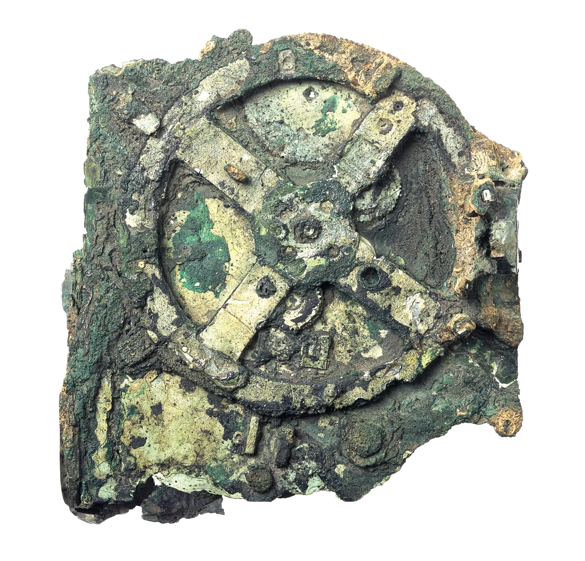

Antikythera Mechanism
Date Made: 150–100 BCE
Location Discovered: Shipwreck off Antikythera Island, Greece
Rough Size: Approx. 12 × 7 × 3 in (width × height × depth)
Materials: Bronze gears and mechanisms in wooden casing
Mystery: Ancient mechanical “computer” with precision gearing and astronomical functions unmatched for over a millennium.